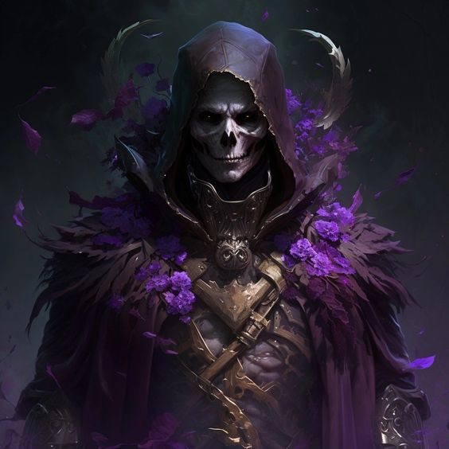

Liches são magos poderosos que, em sua busca pela imortalidade, utilizaram magia negra para transformar-se em mortos-vivos. Ao criar um filactério (um objeto que guarda sua alma), eles se tornam quase indestrutíveis, a menos que o filactério seja destruído. Liches são frequentemente encontrados em fortalezas abandonadas ou ruínas antigas, onde praticam sua magia sombria e controlam legiões de mortos-vivos. Eles são conhecidos por sua inteligência e conhecimento profundo das artes arcanas.